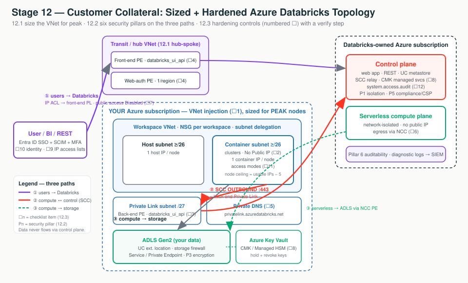

Stage 12 is the meta layer: it doesn't add a new connectivity path, it decides how hard to lock down all three at once and proves it. 12.1 pours the foundation (sizing you can't redo) and counts the doors (Managed → Hardened → Isolated). 12.2 is the guided tour of six trust pillars. 12.3 is the pre-flight checklist where every switch has a confirmation light (the verify step).
Design, pitch, and sign-off for one building. A fixed-size plot of land (the VNet — footings you can't widen), wrapped in a progression of gates you bolt on only when needed, explained through six pillars, and signed off with a 13-item inspection. Secure by default, hardened by configuration, sized once for peak — and we prove every control is on, not just configured.
| Artifact | What it delivers | Touches |
|---|---|---|
| 12.1 Sizing & decision guide | CIDR/subnet worksheet + Managed/Hardened/Isolated tree | Shapes the VNet (paths ②③); chooses controls across all three |
| 12.2 Security overview | Six pillars: isolation, network, encryption, identity, compliance, audit | Overlays all three paths; default vs opt-in |
| 12.3 Hardening checklist | 13 items, each with why / how / verify | One control bolted onto each hop of ①②③ |

"We size the network once for your peak so you never rebuild, we add exactly the locked doors your regulator requires, and we hand you a checklist where every control has a confirmation light — not a marketing claim, a verifiable control with a doc behind it."
privatelink.azuredatabricks.net — resolves the URL to the PE IP. → M3.2Two deliverables: a CIDR/subnet worksheet (size once for peak — subnet CIDR is immutable) and a topology tree (Managed → Hardened → Isolated). Switch the diagram between the sized VNet and the three reference architectures; click any box for the "what + why."
Subnet CIDR is immutable after the workspace deploys — size for peak (+~30%), equal
host/container, VNet 2+ bits larger, a /27 Private Link subnet reserved. And
over-building the topology (Isolated + firewall) when an IP access list was the ask burns
cost and weeks of DNS work. Match the architecture to the requirement.
| Subnet CIDR | Usable IPs | ≈ Max nodes (all clusters) | Good for |
|---|---|---|---|
/26 | 59 | ~59 | Small/dev |
/24 | 251 | ~251 | Typical prod |
/22 | 1,019 | ~1,019 | Large prod / many jobs |
/20 | 4,091 | ~4,091 | Exceptional — usually split workspaces |
| Dimension | Managed | Hardened | Isolated |
|---|---|---|---|
| Public endpoint | Open / NSG-limited | IP access lists | Disabled (front-end PL) |
| Compute → control | SCC (backbone) | + classic Private Link | classic Private Link |
| Exfiltration | minimal | egress control | + Azure Firewall (hub-spoke) |
| Cost / effort | $ | $$ | $$$ (NAT+PE+firewall+DNS) |
| Tier | PE optional | Premium | Premium |
SCC + VNet injection are in all three — the baseline, not an upgrade.
Terraform (azurerm) — the CIDRs that set the node ceiling. Full VNet/NSG/NAT module is in the M2/M3 hands-on artifacts.
resource "azurerm_virtual_network" "adb" {
address_space = ["10.50.0.0/16"] # /16: room for big subnets + a PL subnet
}
resource "azurerm_subnet" "container" { # "private subnet" — MUST equal host size
address_prefixes = ["10.50.1.0/24"] # /24 = 251 usable -> ~251 node ceiling
delegation { name = "databricks-del"
service_delegation { name = "Microsoft.Databricks/workspaces" } } # required
}
# 10.50.2.0/27 left free for the back-end Private Link endpoint subnet.Portal: Virtual networks → + Create → set address space → + Add subnet ×2 (equal, non-overlapping) → Azure Databricks → Networking → Deploy to your VNet = Yes. ⚠️ CIDR can't change after Create.
After 2026-03-31, new Azure VNets default to no outbound internet — a new workspace needs an Azure NAT Gateway on both subnets (also a stable egress IP) or clusters can't reach the control plane.
The "is it secure?" briefing — six pillars, each a named, verifiable control. Switch the diagram between the six pillars view (where each pillar attaches) and the default vs opt-in view; click a box for the "what + why."
"Secure by default, hardened by configuration." The baseline (isolation, SCC, TLS, Entra ID, Unity Catalog, audit) is on out of the box on Premium; Private Link, CMK, and CSP are opt-in controls you add only when a named requirement justifies the cost. Every claim must match the deployed config.
| Control | Default (Premium) | Opt-in | Answers |
|---|---|---|---|
| Plane separation / SCC | ✅ | — | "Where does data run? Inbound exposure?" |
| Encryption at rest | ✅ platform-managed | CMK | "Can we hold the keys?" |
| Entra ID SSO / SCIM / UC | ✅ | Conditional Access · ABAC (Preview) | "One identity? Row/column control?" |
| Front/back-end Private Link · NCC | — | ✅ Premium | "Off the internet? Trust serverless egress?" |
| Compliance Security Profile | — | ✅ Add-on | "PCI/HIPAA-ready?" |
Audit (system.access.audit) | ✅ (Preview) | SIEM export | "Who did what?" |
SQL — the query an FDE runs in front of the security team. Nothing lands better than showing the log.
SELECT event_time, user_identity.email AS who, service_name, action_name,
source_ip_address, response.status_code
FROM system.access.audit
WHERE event_date >= current_date() - INTERVAL 7 DAYS
AND response.status_code >= 400 -- 4xx/5xx = denied or errored
ORDER BY event_time DESC LIMIT 100;CMK scope: covers managed services / DBFS root / managed disks — not serverless ephemeral disks. Serverless ≠ classic for CSP standard/region coverage. And don't say "fully isolated" unless front+back-end Private Link and public access Disabled are deployed.
The pre-flight checklist — 13 items, each with why · how · verify. The whole list is the three-path scaffold with one control bolted onto each hop. Switch the diagram between the three connectivity paths to see which checklist items lock each; click a box for the proof.
Half of field incidents are a control that was configured but silently not effective (an NSG rule overwritten, a Private DNS zone not linked, an audit schema never enabled). Every item has a one-command/one-click verify — read the light, don't assume the gear is down.
| # | Item | Why | Verify |
|---|---|---|---|
| 1 | VNet injection + sizing | Own NSGs/UDRs/DNS; foundation for PL. CIDR immutable. | Subnet shows NSG + delegation; cluster IPs in container range. |
| 2 | SCC / No Public IP | No inbound attack surface. | NICs have no public IP; enableNoPublicIp = true. |
| 3 | Back-end Private Link | Removes last public hop for classic. | PE databricks_ui_api Approved; nslookup → private IP. |
| 4 | Front-end PL + web-auth | Private user path; SSO over private. 1 web-auth/region. | URL → transit PE IP; SSO completes. |
| 5 | Private DNS | PE useless if DNS returns public IP. | nslookup from VNet → private IP. |
| 6 | NCC (serverless) | VNet injection doesn't cover serverless. | NCC binding + PE rules Established; serverless query succeeds. |
| 7 | Public access = Disabled | Rejects all public connections. | Outside corp net: URL unreachable. |
| 8 | CMK | You hold/revoke keys. | Encryption blade shows Key Vault URI. |
| 9 | IP access lists | Restrict front-end to known IPs. | Off-list blocked; egress IP in ALLOW. |
| 10 | Entra ID SSO+SCIM+MFA | Central identity; auto-deprovision. | Test user syncs/de-syncs; MFA enforced. |
| 11 | Cluster policies + access modes | Forbid legacy No Isolation Shared. | Legacy mode rejected for non-admins. |
| 12 | Audit logging | Immutable who-did-what. (Preview.) | Query returns rows; schema enabled. |
| 13 | Terraform IaC | Reproducible, drift-detectable. | terraform plan = no diff. |
resource "azurerm_databricks_workspace" "this" {
sku = "premium" # Premium -> PL, CMK, IP ACLs, CSP
custom_parameters {
no_public_ip = true # SCC / NPIP (item 2)
virtual_network_id = azurerm_virtual_network.adb.id # VNet injection (item 1)
}
public_network_access_enabled = false # item 7 (with front+back-end PL in place)
}IP ACLs: databricks workspace-conf set-status --json '{"enableIpAccessLists":"true"}'.
NCC: Account Console → Cloud resources → Network Connectivity Configurations.
Start at the baseline, step up only when a named requirement justifies the cost — and prove every control is on, not just configured. Size once for peak (the cheapest insurance against a rebuild), and tie every opt-in control (Private Link, CMK, CSP — all Premium) to a regulatory or data-residency requirement, never "nice to have."
| Customer asks… | Architect answers… |
|---|---|
| "How big should subnets be — can we change them later?" | Size for peak via the worksheet; no, subnet CIDR is immutable — a rebuild is the only redo. |
| "Which architecture do we need?" | Run the tree: regulated/exfiltration → Isolated; ingress/egress control → Hardened; else Managed. Don't over-build. |
| "Does any traffic touch the public internet?" | With SCC + front+back-end PL + public access Disabled + NCC for serverless — no public path. |
| "Can we hold and revoke our own keys?" | Yes — CMK from Key Vault across managed services, workspace storage, and disks (not serverless disks). |
| "Are you PCI/HIPAA-ready, and what do we do?" | Enable CSP + the right standard; it's shared responsibility — config + free-text fields are yours. |
| "Prove the audit trail." | Run a live system.access.audit query in front of them. |
| "How do we prove each control is on?" | The verify column — each is one command or Portal check. |
Container subnet too small for peak autoscale.First check: container subnet free-IP count vs peak nodes, minus the 5 reserved.
The compute stable-egress IP isn't in the ALLOW list.First check: egress IP in ALLOW (or back-end PL configured) — not quota.
DNS still returns the public IP, or web-auth missing.First check: nslookup the host + the single regional browser_authentication endpoint.
A classic NSG/UDR was applied; serverless needs NCC.First check: NCC binding + private-endpoint rule, not classic networking.
The system schema was never turned on.First check: system.access schema is enabled at the account.
PL/CMK/CSP are opt-in, not automatic.First check: workspace tier + which add-ons are actually enabled.